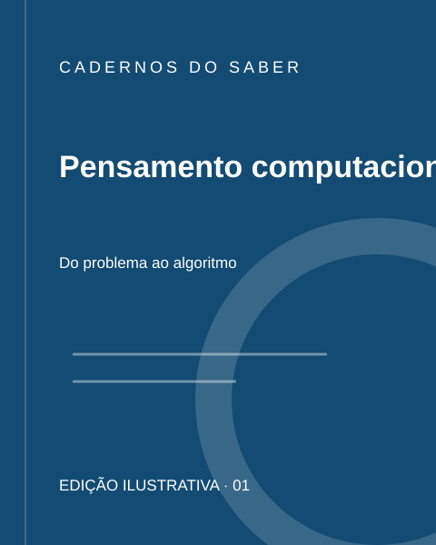
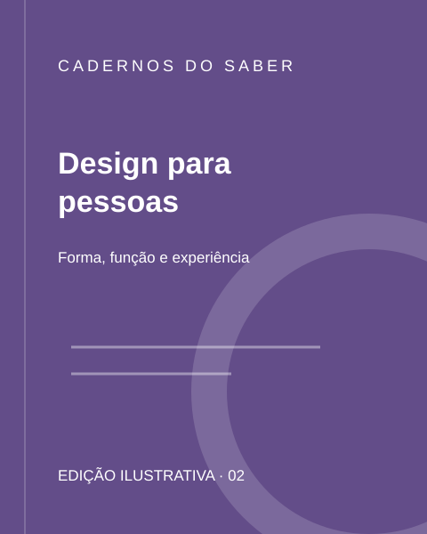
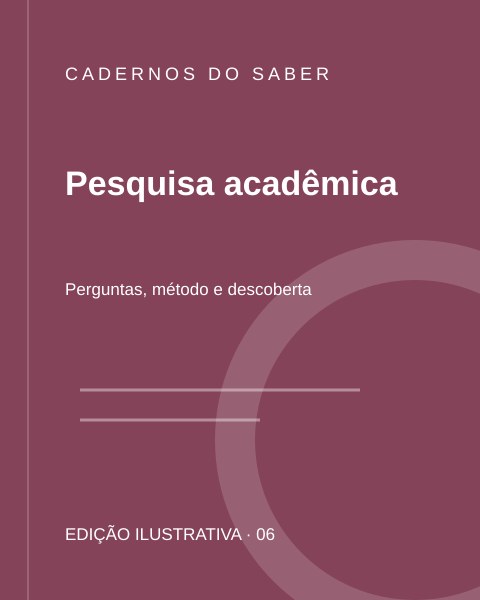

Leitura digital
Descubra os canais de acesso às bibliotecas virtuais.
SEU PRÓXIMO CAPÍTULO COMEÇA AQUI
Um espaço para descobrir ideias, ampliar horizontes e acompanhar cada etapa da sua jornada acadêmica.
Explore nossos livrosProjeto acadêmico de Design Web · HTML e CSS
SOBRE A NOSSA BIBLIOTECA
A biblioteca faz parte da vida universitária: aproxima estudantes do conhecimento e oferece caminhos para estudar, pesquisar e explorar diferentes áreas.
Esta proposta organiza a apresentação do acervo e dos serviços em uma interface simples. Para consultar materiais e orientações institucionais, visite a biblioteca oficial da UniFECAF.
Descubra os canais de acesso às bibliotecas virtuais.
Conheça o repositório de trabalhos da instituição.
Encontre referências para sua jornada de aprendizagem.
Consulte as orientações para pesquisa e renovação de livros.
UMA IDEIA PUXA A OUTRA
EXPLORE O CONHECIMENTO
Seis ideias para começar.
Um universo para explorar.
Catálogo demonstrativo: títulos e capas autorais ilustrativos, sem vínculo com o acervo real.

Uma introdução à lógica, à decomposição de problemas e à construção de algoritmos.
Título fictício usado para demonstrar a interface. O acesso ao acervo real ocorre pelos canais oficiais da biblioteca.
Consultar a biblioteca oficial →
Explore hierarquia visual, composição e interfaces que colocam as pessoas no centro.
Título fictício usado para demonstrar a interface. O acesso ao acervo real ocorre pelos canais oficiais da biblioteca.
Consultar a biblioteca oficial →Conheça conceitos de planejamento, colaboração e inovação nas organizações.
Título fictício usado para demonstrar a interface. O acesso ao acervo real ocorre pelos canais oficiais da biblioteca.
Consultar a biblioteca oficial →Reflita sobre estratégias de estudo, autonomia e aprendizagem ao longo da vida.
Título fictício usado para demonstrar a interface. O acesso ao acervo real ocorre pelos canais oficiais da biblioteca.
Consultar a biblioteca oficial →Descubra como organizar, interpretar e comunicar dados de maneira responsável.
Título fictício usado para demonstrar a interface. O acesso ao acervo real ocorre pelos canais oficiais da biblioteca.
Consultar a biblioteca oficial →
Entenda as etapas de uma investigação e a importância das referências acadêmicas.
Título fictício usado para demonstrar a interface. O acesso ao acervo real ocorre pelos canais oficiais da biblioteca.
Consultar a biblioteca oficial →CONHECIMENTO QUE SE CONECTA
Conheça o campus, encontre seu polo e descubra os canais digitais da instituição.
O campus-sede conecta a experiência presencial aos espaços de aprendizagem. Consulte a instituição para informações atualizadas sobre estrutura e atendimento.
Conheça a graduação presencial →Encontre os polos de apoio da UniFECAF e consulte as informações da unidade mais próxima de você.
Encontre seu polo →As orientações para acessar as bibliotecas virtuais estão disponíveis na página oficial da biblioteca. Este bloco representa um canal de acesso, e não uma unidade física.
Veja como acessar →VAMOS CONVERSAR
Consulte os canais oficiais para tirar dúvidas sobre o acervo, o acesso digital e os serviços da biblioteca.
Acesse a biblioteca oficial ↗Informação confiável começa na fonte.
Conheça as orientações da UniFECAF.